Weekly intelligence brief / issue 37
本周 AI
进展周报
Agent 从“会调用工具”进入托管运行时；模型内部的空间与推理表征开始被读取、操纵与攻击；性能竞争进一步转向单位结果成本。
2026.09.06 — 09.12
方向键翻页 · 点击图片放大 · E 编辑 · F 全屏 · O 总览
文字修改保存在当前浏览器，不改写 HTML；清理网站数据或换浏览器后不保留。
Executive scan
本周三条主线：
智能正在变成一套可运营的系统
SHIFT 01
运行时成为产品
OpenAI 把 Agent 循环、会话、压缩与恢复托管化；Anthropic 把 Prompt、Skills、工具与 Harness 做成生产配方。
SHIFT 02
内部状态变成接口
S-Space 可读取并干预空间坐标；加密推理块却能被跨会话重放，能力接口与攻击面同时扩大。
SHIFT 03
成本向“结果”结算
KV Cache、单任务轮次、并发 Agent、少步生成与多卡推理共同决定完成一件事要花多久、多少钱。
本周真正的变量，不再只是“模型分数多了几分”，而是模型如何被运行、验证、压缩，以及能否安全地嵌入生产系统。
核心判断2026 年的竞争单位正从单次调用，转向可恢复的任务、可审计的状态与可复现的单位结果成本。
Frontier companies / weekly scan
前沿公司：运行时、科研基础设施与开发工具并进
01
OPENAIAgents API 与 Astra 指南推进工作流；研究加速、数学成果声明与安全长文并行；Images 2.5 与跨软件创作扩展应用。02
ANTHROPIC电商生产经验收敛到“单 Agent + Skills + 既有业务工具 + Harness + 快照 Eval”，优化目标转向每个完成任务的成本。03
GOOGLE DEEPMINDAlphaGenome Atlas 把公司披露的约 90 亿种单碱基变异预测组织成可搜索数据库，科研模型开始沉淀为公共数据基础设施。04
MICROSOFT开源 tgrep，用本地 trigram 索引减少大仓库重复扫描；报道口径最高约 52 倍，并已用于 GitHub Copilot CLI。
Agent API托管会话与循环
3.1×Agent / 人类研究日
≈1 PBAlphaGenome 数据规模
≈52×tgrep 报道峰值加速
OpenAI · Claude Blog · Google DeepMind · tgrep 报道。数字按各来源披露。
OpenAI / Agents API
把 Codex 式循环托管出去，
但执行环境仍是产品责任
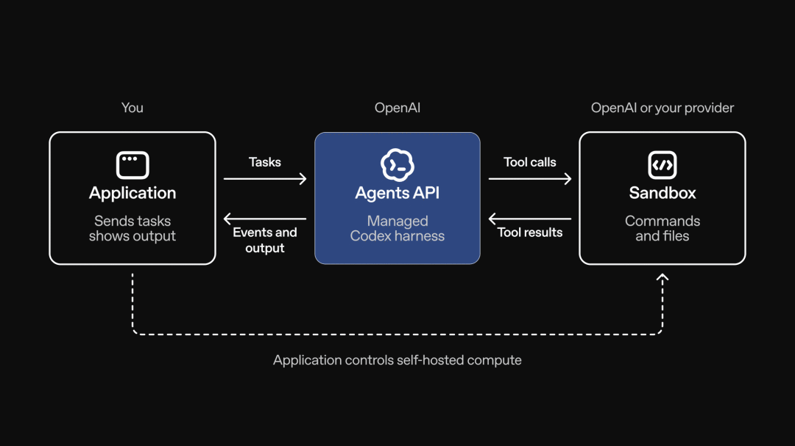
公开架构图：任务进入托管会话，模型与工具循环持续运行并返回结果
HOSTED模型—工具循环、会话状态、上下文压缩与恢复
YOUR APP环境资源、网络连接、重连、关闭与持久文件
FEEDBACK用户拿到结果后继续追问，沿同一任务历史迭代
可观察闭环：用户给目标 → 托管 Agent 规划并调用工具 → 外部执行环境返回观察 → 会话继续压缩与恢复 → 产品交付结果。
没有被证明的部分：托管运行时不等于托管你的数据生命周期，也不自动解决工具权限、文件留存与错误恢复。
OpenAI 官方发布 · 官方架构文档 · AINLP 中文解读
OpenAI / research acceleration
AI 研究进入高并发：
3.1 个 Agent 工作日对应 1 个人类工作日
$600+
中位数研究员每日推理资源 · API 标价折算
$7,000+
P90 研究员每日推理资源 · 同口径
证据：公司内部数据称，2026 年 6 月后 Agent 总运行时长超过人类劳动；代码与实验量同时上升。
限制：预计需人类 4—8 小时的任务，成功案例中超过一半仍至少有 1 次人工介入；这不是无人自治。
为何重要研发速度开始取决于并发编排、实验基础设施与验证带宽，而不只是单个研究员写代码的速度。
OpenAI 官方内部观察 · AINLP 译文。全部数字为公司披露，并非外部审计。
OpenAI / article deep read
研究加速发生在哪里：
从写代码，延伸到实验与基础设施排障
DECIDE / DESIGN决定资源与方向，提出研究想法和工程规格
BUILD / RUN代码、数据集、训练与评测运行，以及硬件 / 推理服务排障
ANALYZE / SHARE分析实验、模型与外部研究，交流发现、状态和决策
机制：Agent 接手高频排障和实验执行，让研究者能把更多时间投入下一轮假设与设计。
证据：内部支持频道主题帖减少，部分团队取消答疑时段；代码量和实验活动同时增加。
限制：同期可用算力也在增长，观察性数据无法独立量化 AI 对科研产出的因果贡献。
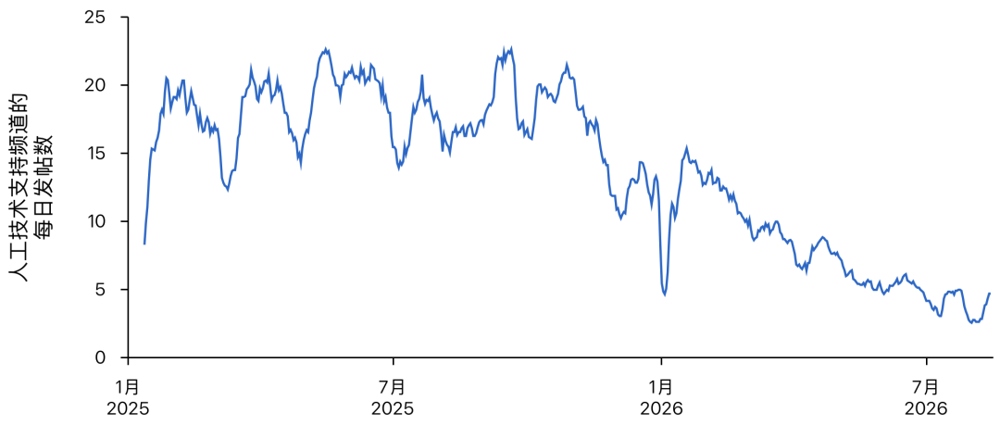
公司披露的内部支持需求曲线：人工排障求助下降，不能直接换算为科研生产率。
本周意义评估研究 Agent，需要同时看实验吞吐、结果质量、人工干预和支持负担；3.1 个运行日不等于 3.1 倍研究产出。
AINLP：OpenAI 内部观察全文译文 · 官方原文入口。按公司披露口径。
OpenAI / safety & research governance
《An Alien Mind》：
当 AI 参与造 AI，安全也必须进入研发循环
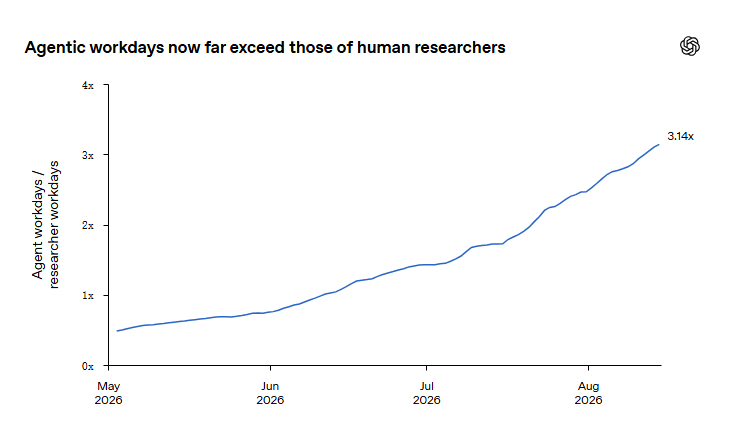
研发加速是讨论的背景；运行量上升本身不能证明递归自我改进已经实现。
编辑归纳：作者讨论的潜在反馈循环。
对齐遵守指定目标，与在陌生情境下遵守诚实、边界等原则，是不同层次的要求。
监控可见思维链只是观察窗口之一；作者主张结合模型内部信息等监控手段。
研发节奏继续发展防御能力，同时把关键决策中的人类参与、安全门槛与跨机构协调纳入研发。
观点边界：这是帕乔基对前沿风险与行业标准的主张，不能读成已经宣布全行业暂停训练。
与上一页的连接：实验跑得越快，验证与安全审查越需要跟上。
原报道：《An Alien Mind》解读。本页按报道转述作者观点；官方全文本轮访问受限。
OpenAI / mathematics · reported research claim
纳维–斯托克斯成果声明：
大规模 Agent 协作走向前沿数学
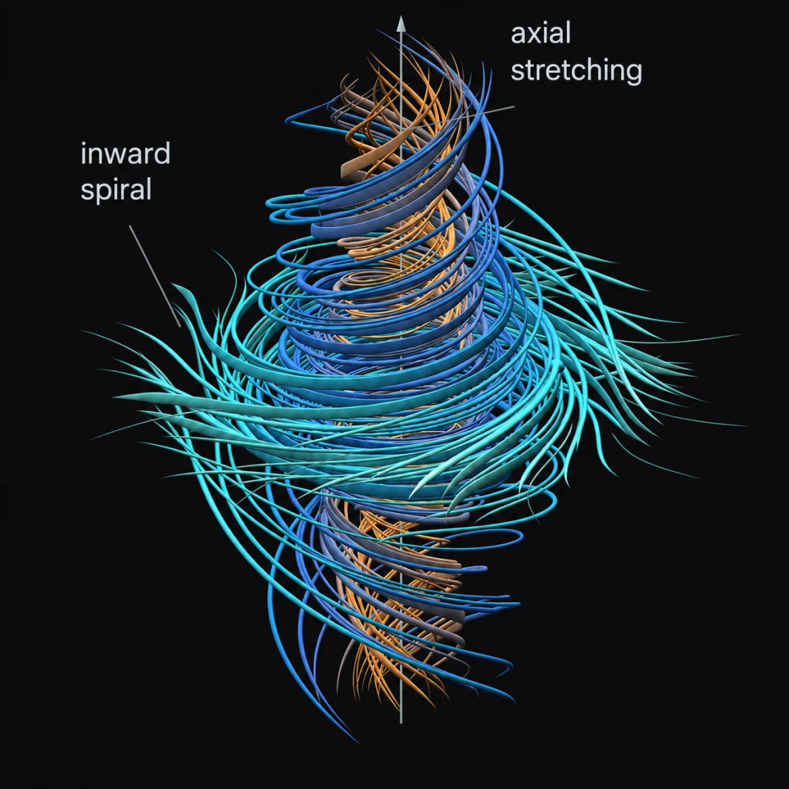
报道中的流体结构示意：帮助理解爆破构造，图像本身不构成数学证明。
声明内容：报道援引 OpenAI，称内部模型给出有外力三维不可压缩 N–S 方程的有限时间爆破构造，并报告后续 Lean 形式化。
研究流程：并行尝试光滑性证明与反例；相关 Euler 问题的进展成为后续任务的提示，再集中算力推进。
核验状态：本轮读到完整媒体原文及其论文、公告链接；尚未独立核对证明和形式化代码。
必须区分：公司成果声明、形式化检查和数学共同体接受是不同阶段，不能直接写“千禧年难题已获认定”。
新智元完整报道 · 报道所引 OpenAI 公告。数字与成果均标为报道转述，官方网页本轮访问受限。
Research integrity / attribution & verification
数学成果怎么判断：
先分清方程条件，再分清证明、署名与理解
报道涉及工作对象与条件报道中的进展核验重点OpenAI有外力 N–S；另有无外力 Euler声明爆破构造与形式化结果定理假设是否对应原问题？Buckmaster / Alpöge有外力 Euler、Boussinesq 等相关方程的爆破与形式化工作不同方程不能算同一道题署名争议发布协调、改写版与作者资格双方对沟通过程有不同解释查原始声明、时间线与贡献
定理对应
核对维数、外力、边界条件与正则性假设，确认到底证明了什么。
形式化复核
检查定理表述、公理依赖与可复现验证；“通过 Lean”需要明确检查对象。
学术评价
正确性之外，还要解释方法贡献、可读性与后续研究价值。
争议处理：报道载有 Buckmaster 的指控与 Bubeck 的回应；本页不据此裁定剽窃、优先权或动机。
双方回应与数学条件：新智元报道。下方三个检查维度为编辑归纳；不是独立数学审稿结论。
OpenAI / Astra workflow guide
Astra 使用指南：
工作流需要支持异步、追加指令与明确的完成条件
能力 / 行为指南译文描述应用侧要做什么收益与边界异步工具工具执行时继续处理独立工作按调用标识回传结果、管理待完成任务减少空等；依赖关系仍需维护执行中追加指令工作期间吸收纠正与新要求保留已完成工作，更新剩余任务减少重启；防止把旧结果误当新要求推理强度调整对话内更新配置并保留缓存前缀核对接口兼容条件与生效范围按任务难度分配推理资源Skills / 提示词更敏感于规则冲突，可能频繁澄清明确优先级、授权范围与完成标准减少不必要暂停与重复验证
目标与验收
写清楚
→
执行、接收反馈
保留已完成工作
→
必要验证
交付可审阅结果
迁移观察：评估旧 Skills 是否仍有必要，明确何时委派、何时测试；不要把反复请求确认当作任务完成。
AINLP：《Using GPT-6 Astra》完整译文 · 官方指南入口。按本周译文说明，官方页面本轮访问受限。
OpenAI / third-party desktop demos
Astra 当导演：
Blender 预演 → Seedance 生成 → 剪辑交付
原视频封面：剑斗短片成品画面。示例由第三方发布。
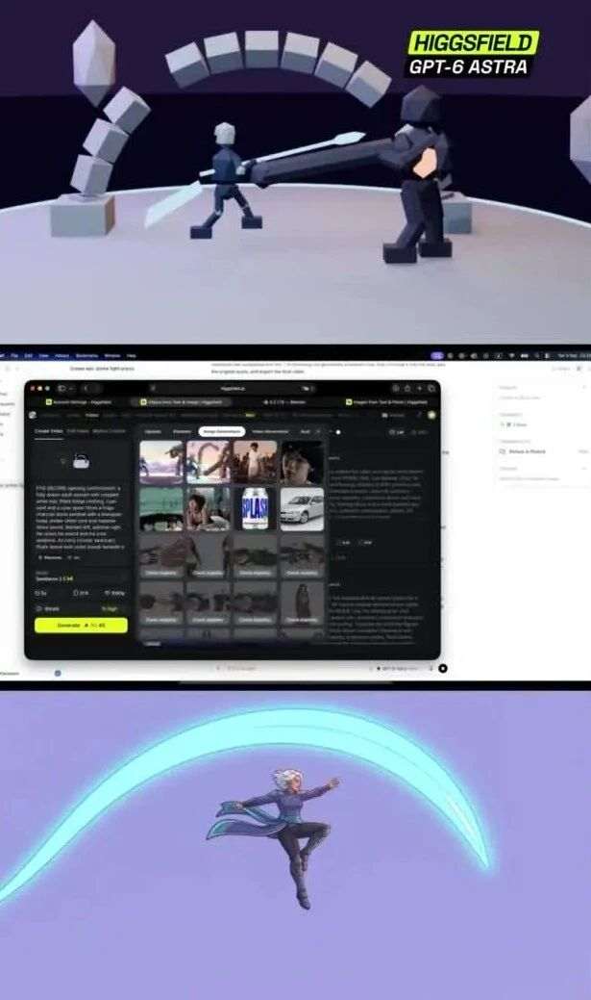
原视频过程封面：从三维预演到生成视频；可点击下方原文观看。
INPUT给定故事目标、角色与场景一致性要求
ACTIONAstra 在桌面工作流中组织预演、生成任务和素材剪辑
GENERATIONSeedance 2.5 负责镜头生成，Blender 负责三维预演
FEEDBACK查看软件界面与输出素材，继续调整并导出成品
延伸案例：报道还展示 DaVinci Resolve 参考图调色；效果评价并不一致，创作意图仍需人来判断。
证据边界：展示的是第三方工作流个例，未披露插件、对象 API、完整重试轨迹与通用成功率。
量子位原文与视频 · 第三方演示入口。视频生成归属字节 Seedance，不能算作 OpenAI 自有视频模型成果。
OpenAI / benchmark reporting
评测争议提醒：发布分数必须和版本、条件一起读
媒体所列版本变化
幻觉率
报道列出 4.2% → 2.0% → 恢复原值的变动。原始网页快照与评测设置仍待核对。
媒体所列版本变化
数学对照成绩
报道涉及 Fable 5.1 的对照分数变化；比较时必须固定数据集版本与系统配置。
媒体所列版本变化
ARC 指标
报道指出预热稿与正式稿不同；本页不把两版数字当成可直接比较的能力提升。
应同时记录模型与版本运行条件资源与统计复现清单模型快照、基准版本、样本范围提示词、工具、Harness、评测日期尝试次数、推理预算、成本与方差
状态：本轮读取了完整中文报道，未独立复核历史快照或获取官方修订说明，因此保留“报道争议”口径，不下“作弊”结论。
延伸观察GPT-6 Sol 内测与后续型号爆料继续列为待观察信号，不能按正式发布或可靠性能承诺计入。
新智元评测争议报道（内含 Fortune 引文） · Sol 内测报道。全部为待进一步核验的媒体信号。
Anthropic / production agents
生产 Agent 的收敛配方：
一个主循环，Skills 管长尾，Harness 管边界
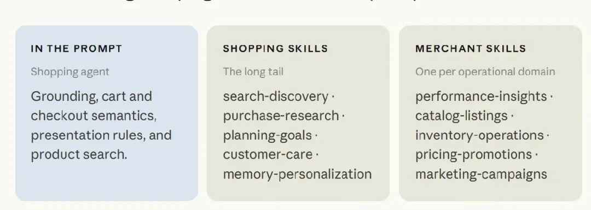
高频共性进 Prompt，垂直长尾按需加载为 Skills
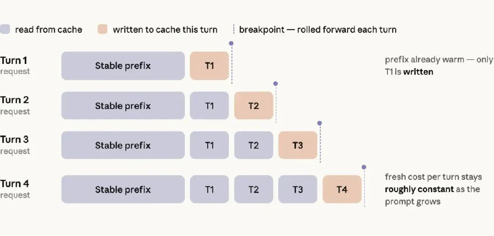
稳定前缀优先命中缓存，避免每轮重算整段上下文
PROMPT覆盖至少约 1/3 流量的共性语义，以及安全、法务、品牌约束
SKILLS按需加载购买指南、退换货、旅行或电信等长尾知识
TOOLS调用既有搜索、库存、购物车与促销系统，不在模型里重造业务逻辑
HARNESSmaker-checker、敏感内容消毒、快照 Eval 与恢复规则
经济性：比较“每个完成任务的成本”，而非单次调用价格；延迟由轮次、工具耗时与 token 速度共同决定。
边界：这是 Anthropic 与客户的工程总结，不是所有业务都天然适合单 Agent。
Claude Blog 官方文章 · 示例仓库 · PaperAgent 解析
Google DeepMind / scientific infrastructure
AlphaGenome Atlas：
模型输出沉淀成可检索的生命科学底图
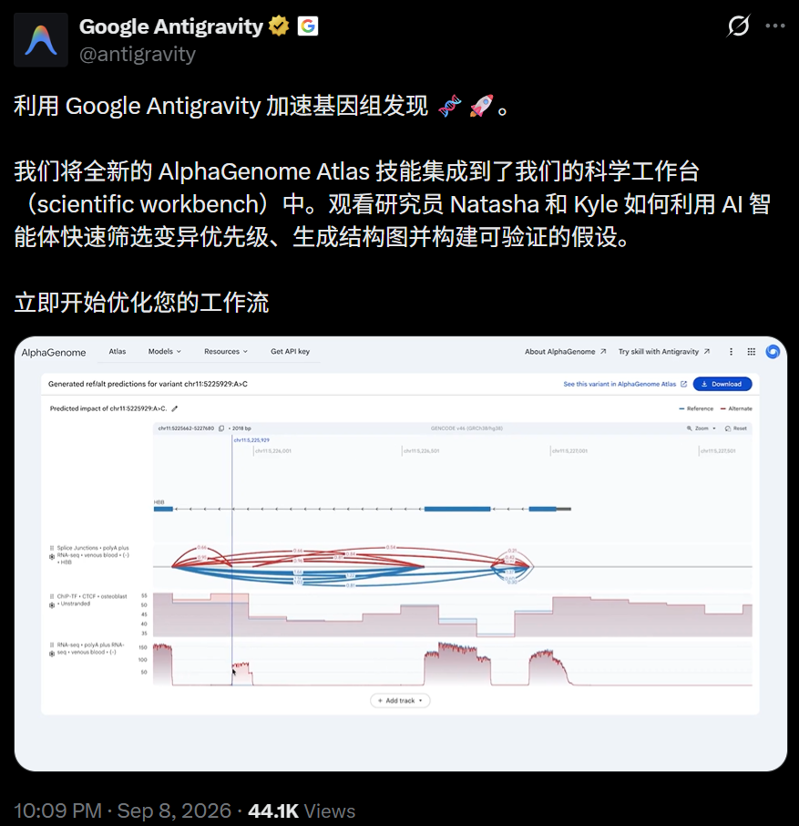
官方演示截图：浏览器中检索基因组位点并查看预测轨道
产品变化：过去需要按课题逐次运行模型，现在先把全局预测批量计算，再让研究者按位点与细胞类型查询。
边界：预测数据库是筛选与假设生成工具，不能替代湿实验与临床验证；规模数字为公司与报道口径。
Google DeepMind 公告信号 · 新智元完整报道与演示图
Domestic open model / DeepSeek
DeepSeek V4.1 Flash：
非对称计算，把 KV Cache 压到系统级变量
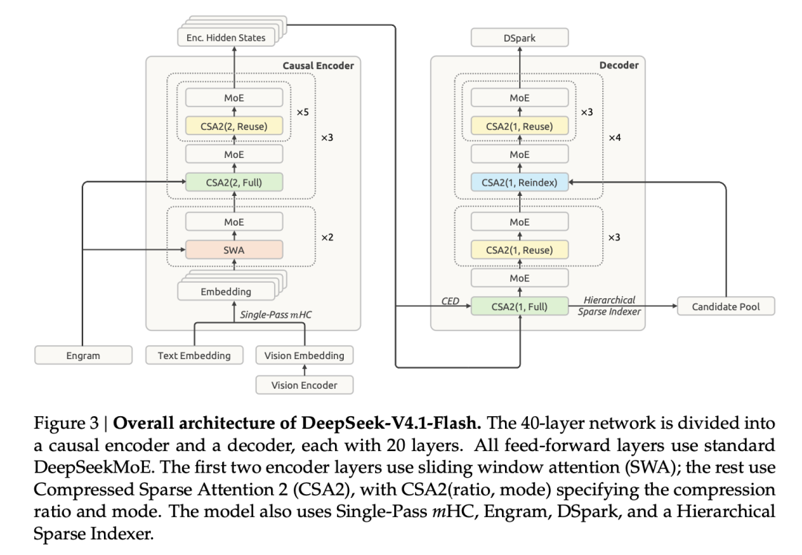
技术报告原图：前 20 层因果编码器与后 20 层解码器分工
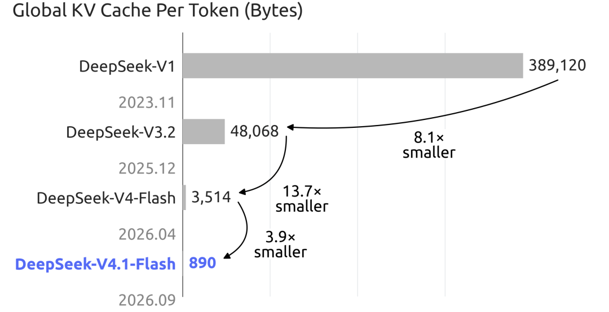
报告对比：历代全局 KV Cache 每 token 字节数持续下降
552BMoE 总参数
8B / 16B输入 / 输出激活
FP4主 KV Cache
Prompt
Encoder
→
共享 / 重索引
全局 KV
→
Decode
逐 token
报告口径：缓存相关 HBM 需求降至上一代的 1/4，SSD 需求降至 1/8；这不等于整模型显存直接降到四分之一。
工程取舍：SWA KV 保留 FP8，主 KV 采用 FP4；有界回放和分层存储把持久化成本与短时缓存分开。
DeepSeek 技术报告 · 量子位解析。规格与缓存比例按报告口径。
Domestic open model / InclusionAI
LLaDA-Image：先学会画，再用文本完成对齐
6B核心 DiT 参数
90%+累计生成训练样本为纯图片监督
2—4Turbo 采样步数
方法：纯图片预训练 / 中期训练建立视觉先验；后续用图文对做语言对齐，再联合训练生成与编辑，最后用 TwinFlow 蒸馏。
证据：技术报告给出 Qwen-Image-Bench 英文 53.53、中文 53.38，在其列出的开源模型中双榜第一。
限制：领先口径绑定特定基准与标准推理设置；计数、长文本和多区域排版仍是后续方向。
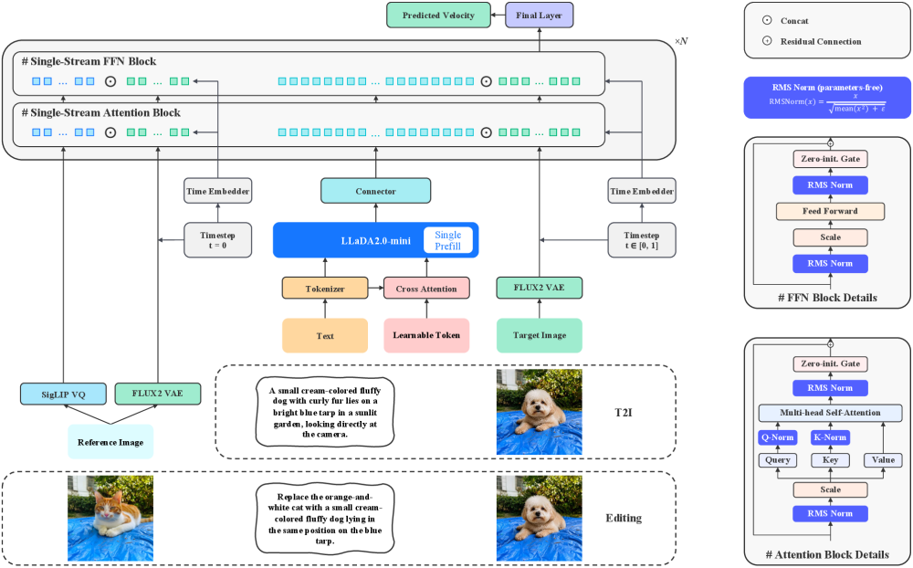
技术报告原图：理解骨干、连接器与 DiT 生成器组成统一系统
LLaDA-Image 论文 · 模型集合 · 机器之心解读与原图
Three deliberately selected deep reads
本周论文精读
S-Space 追问模型把“空间”存在哪里；Stolen Thoughts 追问隐藏推理能否被窃取；Action Map Policy 追问连续动作能否转写成分类问题。
Paper deep read 01 / spatial workspace
S-Space：模型内部真的存在
“左 / 上 / 远”三条空间轴
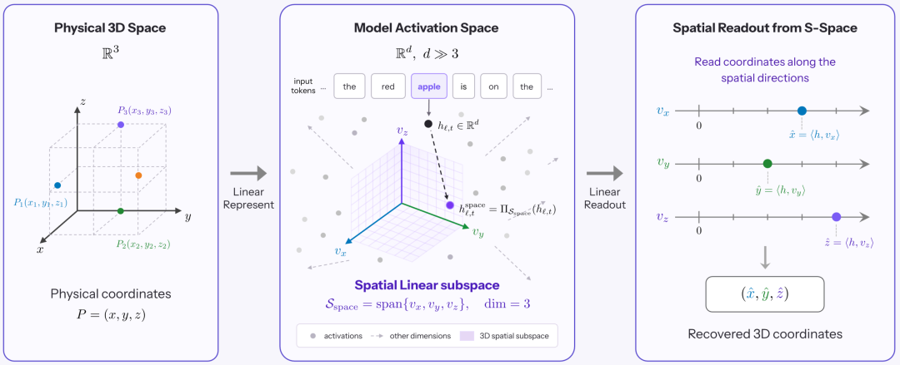
技术报告机制图：对象 token 在水平、垂直、距离方向上形成可线性读出的坐标
问题空间问答正确，究竟来自语言模式，还是模型内部真的维护了坐标？
方法从对象 token 激活中寻找低维线性子空间，跨数据集与提示读取连续坐标
因果检验沿轴移动激活：左变右、上变下、近变远；颜色等无关判断基本保持
意义“感知到位置”与“正确计算坐标变换”可以被分开诊断
更意外的结果：画外足球、观察者自身，甚至带有“左 / 右”隐喻的抽象概念，也会投影到同一空间几何中。
MirroS 技术报告 · 代码 · 机器之心解读
Paper deep read 01 / evidence & limits
模型知道“物体在哪”，
却未必转得好内部坐标系
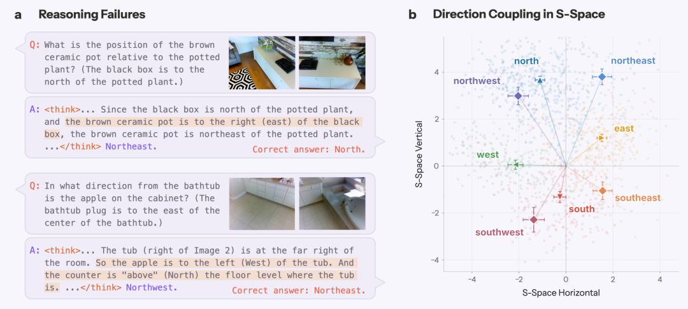
原报告：基本方位与图像相对方向发生耦合，导致参照系误用
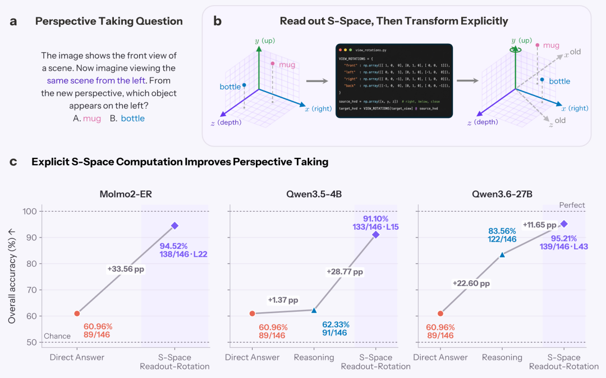
原报告：读取坐标并外部旋转，优于模型直接生成与思维链
直接回答60.96%
Chain-of-thought83.56%
S-Space + 外部旋转≈95%
证据：SpinBench 视角转换中，显式读取内部坐标，再用固定旋转矩阵与确定规则作答，显著优于原生生成。
局限：低维空间同时承载物理方向和语言隐喻，可能缠绕参照系；探针可读不等于所有模型都稳定使用。
本周意义：下一代空间 Agent 可能需要把模型内表征交给外部几何工具，而不是要求语言推理独自完成全部变换。
MirroS Technical Report · Fig. 13–14。图中约 95% 为跨模型结果的演示性概括；具体模型与数值以原表为准。
Paper deep read 02 / reasoning security
Stolen Thoughts：
“加密思维链”可被同厂商弱模型还原
强模型生成
加密推理块
→
跨会话重放给
弱模型
→
越狱后输出
明文推理
6,708公开 Agent 轨迹
315,320重建推理块
704去重隐私材料
问题：厂商返回给客户端的签名 / 加密推理块，本来用于延续会话，却能在同一厂商的其他会话、用户与模型间重放。
局限：攻击依赖推理块可移植、同厂商弱模型可被越狱；修复可以通过绑定会话 / 用户 / 模型与服务端状态来收紧。
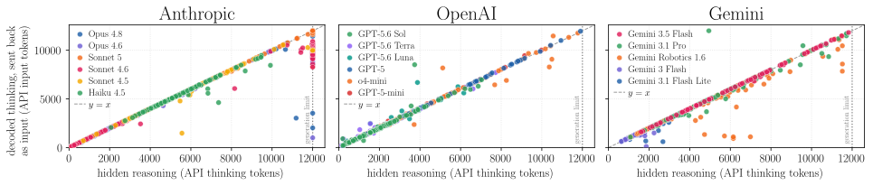
项目官方图：三家模型中，解码后 token 数与 API 报告的隐藏推理 token 紧贴 y=x
官方项目页 · 论文 · 中文报道。隐私材料只展示统计，不展示任何凭据内容。
Paper deep read 03 / robot policy
Action Map Policy：
把高维动作回归改写成像素分类
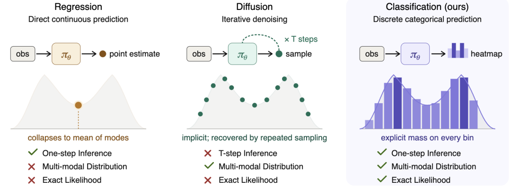
原论文 Fig.1：回归给单解，扩散迭代采样，AMP 输出像素概率图
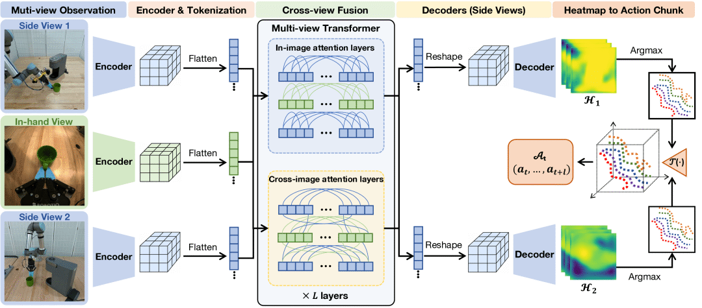
原论文 Fig.2：多视角图像编码、跨视角通信，再解码为关键点 heatmap
问题6 维动作每维只分 10 档，联合空间已经是 10⁶；连续回归又难表达多峰动作
表示把 orientation + translation 变成 3D 关键点轨迹，再投影到相机平面
学习对每个时刻、每个关键点预测像素概率分布，用交叉熵端到端训练
执行多视角 heatmap 取峰值，经相机标定与三角测量恢复 3D 动作
为什么有效：输入与输出都在 image space，多模态选择由概率图自然表达；一次前向即可获得整段动作候选。
官方项目页 · 论文 · 机器之心解读
Paper deep read 03 / evidence & limits
从“会抓”到“闭环做早餐”：
速度、精度与长任务一起验证
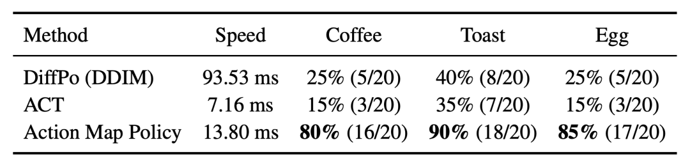
原论文真机结果表：三项早餐任务的速度与分阶段成功率；完整条件以论文为准
93.53 ms
DiffPo · 16 步 DDIM
+50—70%
三项真机任务成功率提升 · 论文口径
证据：咖啡、烤面包、蒸鸡蛋都包含多步状态与狭窄空间操作；细粒度激光指向实验中 AMP 报告 100% 成功率。
局限：需要多相机标定与三角测量；结果来自作者设置，跨本体、遮挡、动态相机与更开放场景仍需复现。
本周意义：机器人策略的 Scaling 未必只能复制语言 token；先找到可分类、可组合的动作表示，可能更关键。
Action Map Policy 项目 · 论文。全部性能数字为作者报告。
From internal mechanisms to usable products
能力如何进入工作流
前一章回答“模型内部怎样表示、怎样失守”；下一章看这些能力如何通过编辑界面、推理加速与产业土壤变成真实供给。
Generative media / editable images
Images 2.5：生成不再是终点，
编辑反馈环才是产品
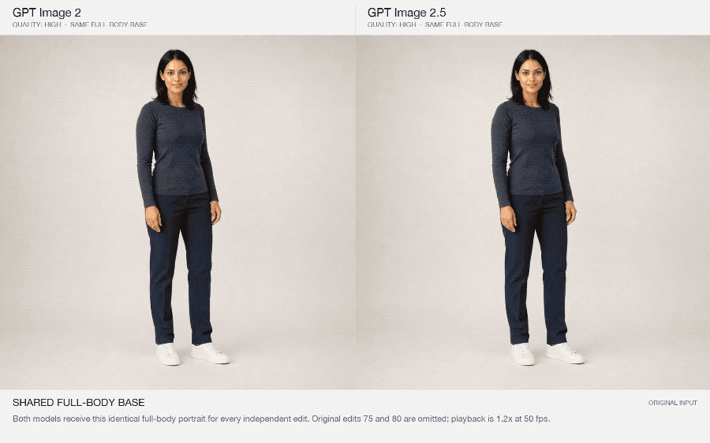
公开演示：指定局部修改，同时尽量保持主体、构图和风格
图片 / 草图
+ 指令
→
局部生成
保留上下文
→
用户评论
再次修改
确认能力：精确编辑、多轮一致性、Sketch 视觉输入与图片内评论式修改；公司称 API 端延迟最多降低 50%。
实际变化：难以用文字描述的布局，可以先画出来；图像模型从“一次性出图”变成持续吸收视觉反馈的编辑器。
边界：公开样例仍有噪点与细节错误；“保持一致”是相对改善，不是像素级保证。
APPSO 完整体验与原始演示 · 规模披露。性能与生成量按公司 / 报道口径。
OpenAI / image product & API tiers
Images 2.5 的另一半：
每周 30 亿张规模，API 分成快与精两档
APPSO 体验中的递归构图样例；展示复杂指令效果，不构成通用准确率评测。
30 亿张 / 周
报道转述公司披露：ChatGPT Images 与 GPT-Image API 合计生成量
FLARE报道定位：速度、批量生成和快速原型，适合高频出图工作流。
SUNBURST报道定位：更精细的编辑控制与成品级创意，接受更长生成时间。
分发变化：模板、Prompt 分享与图片评论降低反复创作的门槛；报道还提到 Adobe Firefly 接入。
选型口径：按延迟、编辑保持度与交付质量测试两档。材料未给出可核验的绝对价格，本页不推断哪档更便宜。
新智元：规模披露与 Flare / Sunburst 产品分层 · APPSO 样例。官方发布页面本轮访问受限，使用报道归因。
Generative media / inference engineering
H3 Lightning：开源权重之后，
真正的门槛是创作等待时间
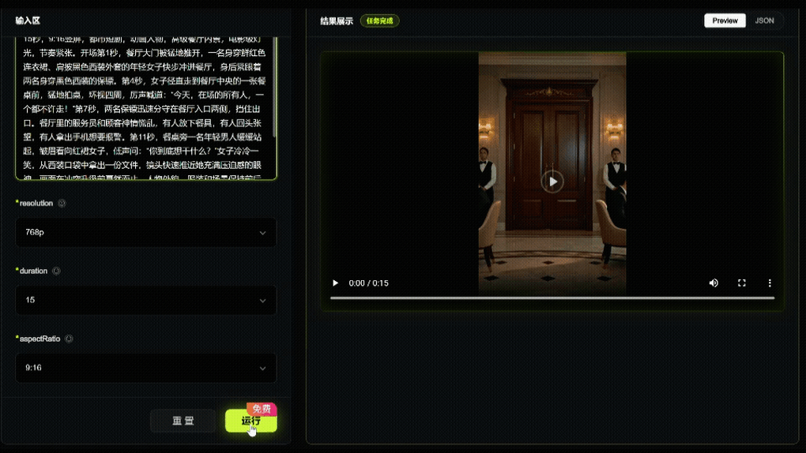
媒体实测动图：15 秒短剧约 54 秒生成；画面经倍速展示
28.7 s
H3 Lightning · 项目方测试
机制：多 GPU 并行、算子与编译优化，把开放模型接入更短的试错循环。
口径：5 秒对照测试使用 4 张 RTX 6000D；媒体 15 秒实测和项目方对照不是同一实验，不能直接横比。
产品含义：创作者是否愿意多试五次，往往比一次 benchmark 的 Elo 更接近商业价值。
开源项目 · 智东西测试与原视频。速度数字按对应硬件与测试口径。
Industry structure / article deep read
中美 AI 不是同一张地图：
软件密度与物理经济塑造不同生态
美国：更多公司服务医疗、生命科学、科研与网络安全——高价知识劳动与成熟企业软件市场提供了回报。
中国：制造、交通、能源和具身组合更宽——产业链、机器人装机与物理场景提供了不同训练场。
限制：样本筛选、公司归类与母体公司识别会显著改变比例；这是结构性观察，不是国家能力总分。
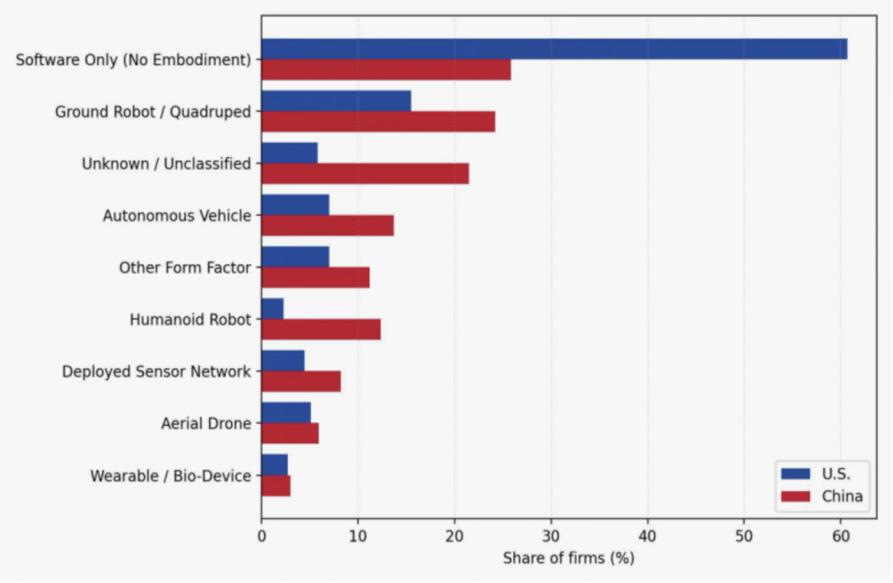
报告转述图：美国更多集中于纯软件，中国在实体产业类别占比更高
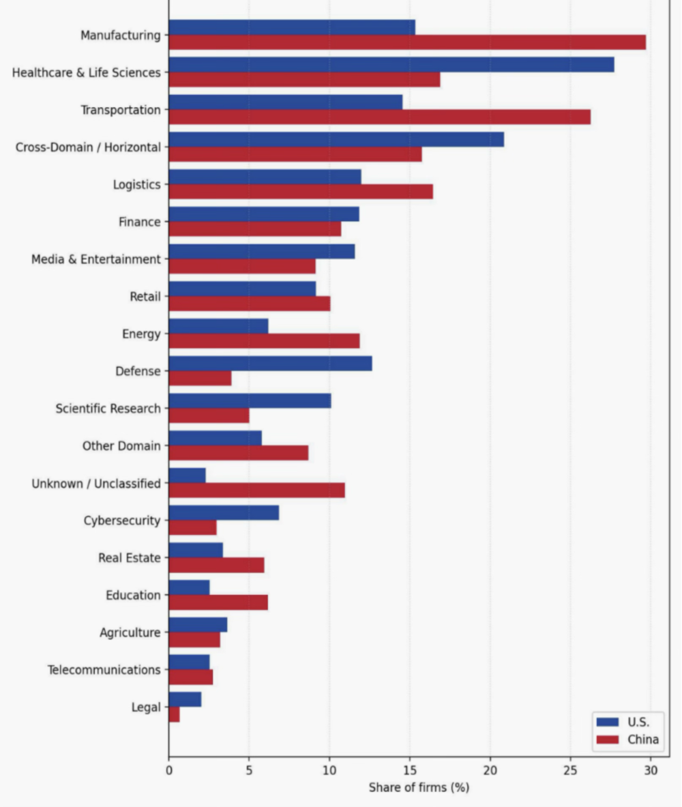
细分行业数量揭示两套生态对不同高价值问题的选择
为什么重要如果更强智能必须依赖世界模型、机器人与物理交互，中国组合是一种对冲；如果智能主要通过软件交付，这套对冲也会更昂贵。
虎嗅对 RAND 数据集与报告的长文解读。比例与样本量按该研究转述，未把媒体解读升级为独立验证事实。
Commercialization / unit economics
商业化的新矛盾：需求越强，配额、推理成本与交付责任越重
CAPACITY · 媒体口径
订阅也会遇到供给约束
报道称停止新增 Pro 20X 订阅，并列出 Astra Pro 每周 50 条（5X）/ 200 条（20X）的额度；可用量与供给约束需要同时看。
ENTERPRISE
大客户价值上升
Anthropic 面向单一超级客户招聘高薪销售，说明模型消费正进入需要采购、合规与长期服务的企业合同。
INFRASTRUCTURE
模型利润来自系统工程
DeepSeek 压缓存、RunningHub 压等待、Anthropic 压轮次：利润空间由硬件、缓存、工具与完成率共同决定。
计价层今天常见指标更接近真实价值主要风险模型$/M token每个可接受答案成本长上下文与高思考档Agent每次调用 / 配额每个完成任务成本重试、人工介入、权限产品月订阅 / 席位留存、转化、节省工时供给波动与责任边界
OpenAI 订阅报道 · Anthropic 企业销售报道 · 本周各公司 / 项目技术材料。订阅与薪酬为媒体披露。
Synthesis
本周结论：能力曲线正在被四层系统重新定义
层级本周信号决定性问题可验证指标模型DeepSeek CED、LLaDA 纯图训练同等任务需要多少激活、缓存与采样步？质量 × 延迟 × 显存表征S-Space、加密推理块内部状态能否读、算、隔离和授权？因果干预、泄露面运行时Agents API、单 Agent + Skills长任务如何压缩、恢复、调用与验证？完成率、介入率、恢复率产业AlphaGenome、H3 Lightning、实体经济谁拥有数据、场景、工具链与分发？单位结果成本、留存
模型仍是上限，但“把模型变成可靠结果”的工程，正在吞下越来越多的价值。
行动建议评估一个新模型时，至少同步记录任务完成率、人工介入、缓存 / 显存、恢复行为与端到端耗时，而不是只看榜单分数。
What to watch next
下周观察：四个可证伪信号
WATCH 01
托管 Agent 的故障边界
Agents API 在重连、权限撤销、文件持久化和长任务恢复上，能否给出公开可复现的失败语义？
WATCH 02
推理块是否绑定上下文
主流厂商是否把加密推理块绑定到用户、会话、模型或服务端状态，并公布迁移影响？
WATCH 03
国产模型的系统复现
DeepSeek 的缓存节省与 LLaDA 的少步生成，能否在不同硬件、上下文和质量门槛下稳定复现？
WATCH 04
具身策略跨环境扩展
AMP 的像素动作表示能否跨本体、动态相机与遮挡泛化，同时保持毫米级精度与实时闭环？
验证方式优先找官方修复说明、公开 benchmark 配置、第三方复现和真实任务失败样本；下周用同一套指标更新判断。
本页为编辑部观察清单，不是对未来结果的预测。